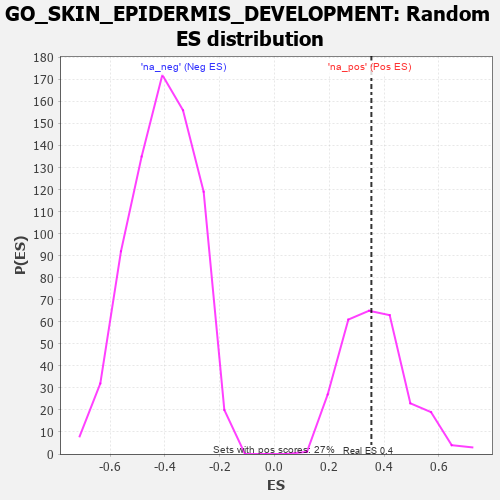

| | | Dataset | 7d |
| Phenotype | NoPhenotypeAvailable |
| Upregulated in class | na_pos |
| GeneSet | GO_SKIN_EPIDERMIS_DEVELOPMENT |
| Enrichment Score (ES) | 0.35347393 |
| Normalized Enrichment Score (NES) | 0.96013343 |
| Nominal p-value | 0.5300752 |
| FDR q-value | 0.77086395 |
| FWER p-Value | 1.0 |
Table: GSEA Results Summary
 Fig 1: Enrichment plot: GO_SKIN_EPIDERMIS_DEVELOPMENT
Fig 1: Enrichment plot: GO_SKIN_EPIDERMIS_DEVELOPMENT
Profile of the Running ES Score & Positions of GeneSet Members on the Rank Ordered List
| PROBE | GENE SYMBOL | GENE_TITLE | RANK IN GENE LIST | RANK METRIC SCORE | RUNNING ES | CORE ENRICHMENT | | 1 | DLL1 | | | 337 | 0.760 | 0.0664 | Yes |
| 2 | ALX4 | | | 413 | 0.686 | 0.1551 | Yes |
| 3 | FST | | | 698 | 0.560 | 0.1995 | Yes |
| 4 | LDB2 | | | 831 | 0.523 | 0.2578 | Yes |
| 5 | NSUN2 | | | 901 | 0.506 | 0.3215 | Yes |
| 6 | SOS1 | | | 1547 | 0.384 | 0.2953 | Yes |
| 7 | ERCC2 | | | 1712 | 0.354 | 0.3254 | Yes |
| 8 | SMAD4 | | | 1860 | 0.326 | 0.3535 | Yes |
| 9 | FGFR2 | | | 2895 | 0.167 | 0.2475 | No |
| 10 | HDAC1 | | | 3086 | 0.138 | 0.2434 | No |
| 11 | NF1 | | | 3713 | 0.040 | 0.1704 | No |
| 12 | CD109 | | | 4325 | -0.064 | 0.1028 | No |
| 13 | LHX2 | | | 4716 | -0.143 | 0.0742 | No |
| 14 | MYO5A | | | 4787 | -0.155 | 0.0876 | No |
| 15 | SMO | | | 5195 | -0.247 | 0.0717 | No |
| 16 | EGFR | | | 6708 | -0.765 | -0.0089 | No |
| 17 | MSX2 | | | 7299 | -1.171 | 0.0845 | No |
Table: GSEA details [plain text format]

Fig 2: GO_SKIN_EPIDERMIS_DEVELOPMENT: Random ES distribution
Gene set null distribution of ES for GO_SKIN_EPIDERMIS_DEVELOPMENT